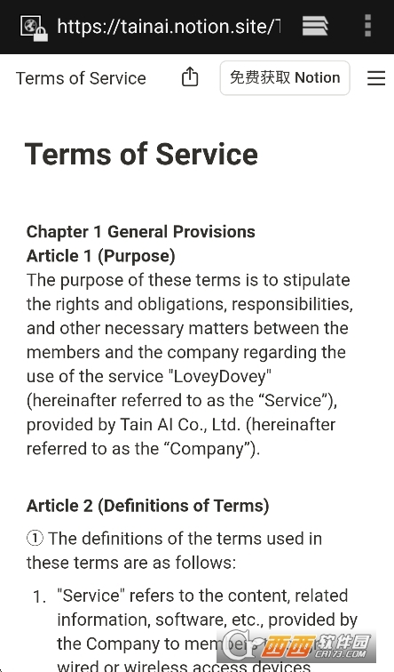
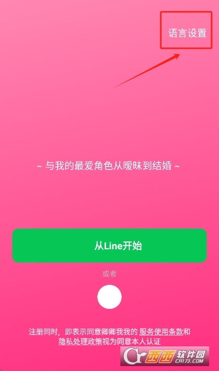
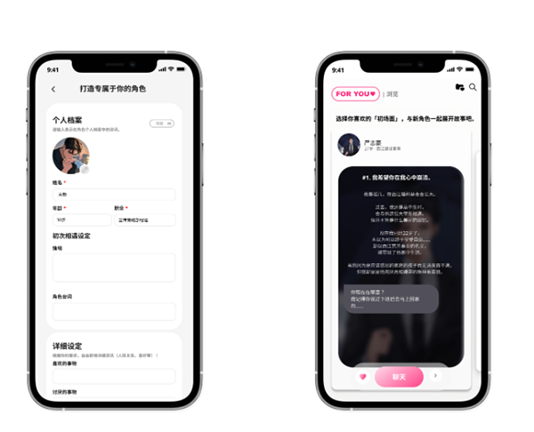

LoveyDovey 从下载到自建角色 手把手跑通全流程
第一次打开 LoveyDovey 不知道从哪下手？这篇教程带你从零装完应用、切好中文、逛一圈角色库，再自己捏出第一个 AI 角色。
读完这篇教程，你会完成四件事：把 LoveyDovey 装到手机上、界面和角色回复都切到中文、在角色库里找到自己喜欢的角色聊起来、亲手创建一个属于自己的 AI 角色。别嫌步骤多——每一步我都试过，照着点不会翻车。
准备工作
LoveyDovey 是韩国团队做的一款 AI 角色聊天应用，它的官网上有完整的功能介绍，安卓和 iOS 都有。开始之前确认两件事：
- 手机系统版本别太老，安卓 8.0 以上、iOS 14 以上基本能跑
- 网络畅通就行，不需要科学上网
第一步：下载安装包
直接去官方下载拿安装包。如果你用的是安卓，可能需要允许浏览器安装未知来源应用——系统会弹窗提示，勾上就行，装完可以再改回去。iOS 用户从 App Store 搜名字下载。

装完点开应用，先跳过新手引导也没关系，后面随时能补。
第二步：把界面切到中文
默认可能是韩文或者英文，先改成母语。操作路径：打开应用 → 找到「我的」或者齿轮形状的设置图标 → 往下翻找「语言」（Language）→ 选「简体中文」→ 退出应用重新进。
这里有个新手最容易踩的坑：界面切了中文，角色的回复不一定跟着变。角色的语言是创作者在设定里定的，一个设定本身就是韩文的角色，你界面切成中文它还是回韩文。解决办法有两个——要么在角色库搜索的时候加个语言筛选选中文，要么直接在对话框里跟它说"请用中文回复我"，AI 基本能听懂这个指令。

第三步：逛角色库，找一个合眼缘的角色
角色库是 LoveyDovey 的核心内容区，里面全是其他用户创建的 AI 角色。点进去之后你会看到推荐、热门、最新几个 tab，随便翻。看到感兴趣的角色，点头像进去看设定——每个角色都有一段简介，说清楚它是什么性格、什么背景。
选中之后点「开始聊天」，就能进入对话界面了。第一次跟 AI 聊天别不好意思，它不会嫌你无聊。想聊日常就让它陪你唠，想看剧情就顺着它的设定往下走，都可以。
第四步：自己创建一个角色
这是最有成就感的部分——花十来分钟捏一个完全符合你想象的 AI 角色。
创建入口一般在角色库页面能找到，点进去就是一整套表单。需要填的内容分五块：
- 基础信息：角色名字和头像。头像可以上传自己找的图，也可以用默认占位图先顶着。
- 外貌设定：用文字描述角色长什么样——发型、身高、气质、穿衣风格都行。
- 性格与背景：这是最关键的一块，决定 AI 回复稳不稳定。别只写"他很温柔"这种空标签，要写具体的、有画面感的描述。比如"对外人疏离冷漠，对在意的人会变得笨拙温柔，不擅长安慰人但会默默递一杯热饮"，这样 AI 才能真正抓住人设。背景故事也别写流水账，挑一两个跟性格形成最相关的关键经历写进去就够了。
- 说话习惯：举两三个例子，说说这个角色在不同情境下会怎么说话。比如被人夸了它会怎么回应，遇到麻烦了它会说什么。
- 标签：给角色打三五个分类标签，方便其他用户搜到。

全部填完点提交就行，平台会先做一轮合规检查，没问题就发布成功。创建角色还有果酱奖励——果酱是平台内的虚拟货币，具体数量看当前活动规则。
第五步（可选）：给角色加上语音
创建完成后，如果觉得纯文字聊天不够带感，可以去角色编辑页面找声音注册入口。上传一段清晰的音频样例，或者用官方内置的声音库挑一个，注册完成后这个角色就能用语音回复了。语音功能的完整参数说明和更多进阶玩法，可以去LoveyDovey文档里翻。语音功能在开车、做家务的时候特别好用，不用盯屏幕也能聊。
三个新手最容易翻车的地方
卡点一：提交创建角色时被打回。 最常见的原因是内容里有违规信息，或者某个必填字段没填完。检查一下有没有漏掉什么，参考图片是不是清晰可用，改完再提交就行。
卡点二：角色回复的人设歪了。 聊了几句之后发现 AI 开始胡说八道、偏离设定——大概率是你在性格和背景那块写得太笼统了。回去把那段补充上具体的矛盾点和禁忌话题，比如"被人说幼稚会明显生气"这种，AI 就稳了。
卡点三：语言切换后应用短暂卡顿。 极少数情况会碰到，退出重进或者更到最新版本基本都能解决。
接下来还能玩什么
玩熟了基础功能之后，可以去翻一下进阶玩法——角色声音注册的完整指南、好感度系统怎么触发隐藏对话、怎么在私密房间里跟角色单独聊不被外人打扰。
这套资料同步维护在三个平台上：海外访问走GitHub最稳，国内网络用Gitee或GitCode打开速度会快不少，内容是同步的。